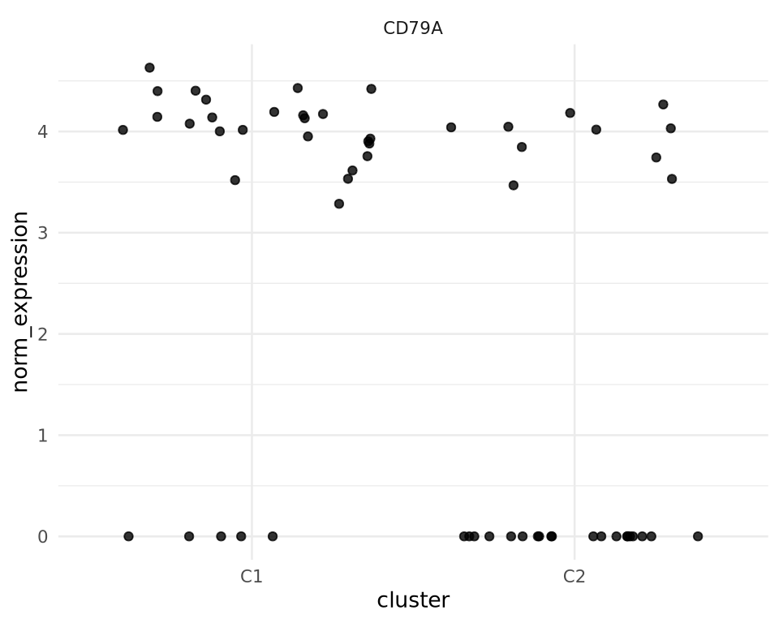
Differential Gene Expression
Single Cell RNA-Seq Analysis
Jennifer Fransson
27-Mar-2025
Workflow
- Quality control
- Cell cycle phase classification
- Normalization
- Select highly variable genes
- Data integration
- Clustering
- Differential gene expression
- GSA/GSEA
- Cell typing
What is differential gene expression?
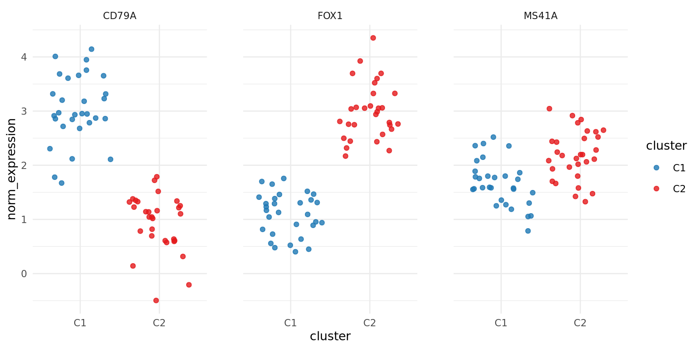Count data -> statistical analysis -> Are differences significant (greater than expected randomly)
What is differential gene expression?
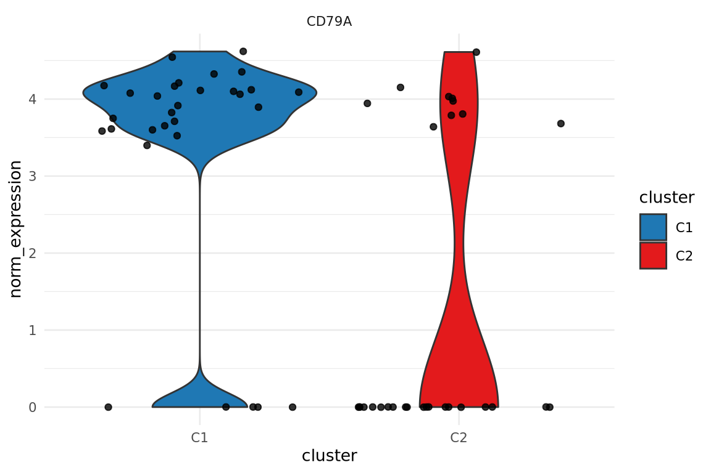
What is differential gene expression?
| avg_log2FC | p_val_adj | pct.1 | pct.2 | |
|---|---|---|---|---|
| CD7 | 5.535220 | 0.0000001 | 0.714 | 0.058 |
| LCK | 3.605886 | 0.0000046 | 0.679 | 0.077 |
| HLA-DPB1 | -5.291575 | 0.0000051 | 0.107 | 0.769 |
| HLA-DRA | -4.128576 | 0.0000126 | 0.357 | 0.865 |
| HLA-DRB1 | -5.027130 | 0.0000172 | 0.107 | 0.731 |
| GNLY | 8.198735 | 0.0000191 | 0.571 | 0.058 |
| GZMM | 3.120563 | 0.0000767 | 0.571 | 0.058 |
| CD3D | 2.255304 | 0.0000805 | 0.643 | 0.096 |
| GZMA | 3.078594 | 0.0001174 | 0.571 | 0.058 |
| HLA-DPA1 | -3.661491 | 0.0002595 | 0.179 | 0.712 |
What is differential gene expression?
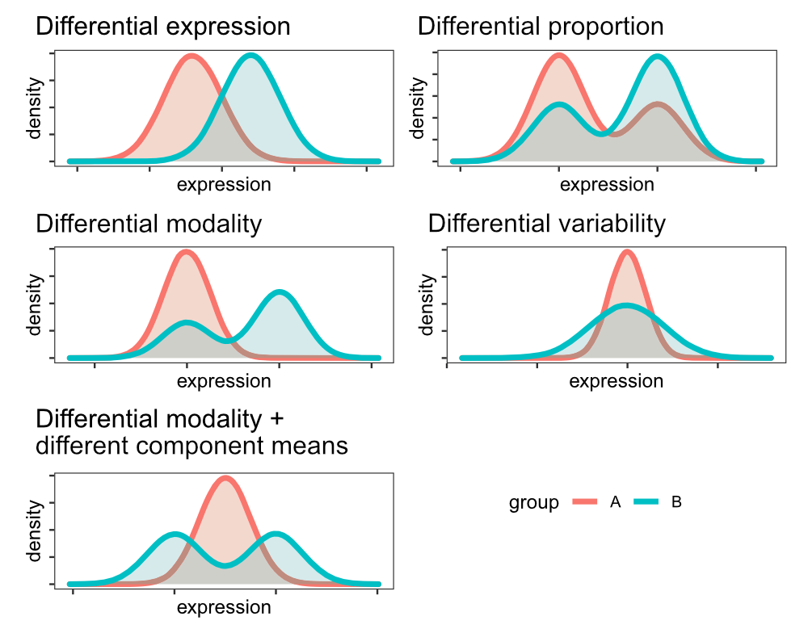
(Modified from Tiberi et al., 2023)
- Most methods focus on fold-change
- Fold-change can reflect many differences
- Not all differences are evident in fold-change or proportion of cells expressing gene
Defining groups of interest
- A priori defined groups: Compare cells from different samples, e.g.:
- Experimental groups (treatment, time points, clinical information etc)
- Sorted cells
- Data-driven definition: Compare cells depending on analysis output, e.g.:
- RNA-based clustering/identity
- Identity based on other data from multi-omics
Warning: Performing DE on clusters defined with the same data (“double-dipping”) will inflate DE analysis. Be mindful of this when you interpret the results.
Functions
| Toolkit | Function |
|---|---|
| Seurat | FindMarkers(), FindAllMarkers() |
| Scran | findMarkers() |
| Scanpy | scanpy.tl.rank_genes_groups() |
FindAllMarkers
FindAllMarkers(
object,
assay = NULL,
features = NULL,
logfc.threshold = 0.1,
test.use = "wilcox",
slot = "data",
min.pct = 0.01,
min.diff.pct = -Inf,
node = NULL,
verbose = TRUE,
only.pos = FALSE,
max.cells.per.ident = Inf,
random.seed = 1,
latent.vars = NULL,
min.cells.feature = 3,
min.cells.group = 3,
mean.fxn = NULL,
fc.name = NULL,
base = 2,
return.thresh = 0.01,
densify = FALSE,
...
)Seurat 5.1.0
Tests
"wilcox" : Identifies differentially expressed genes between two groups of cells using a Wilcoxon Rank Sum test (default)
"bimod" : Likelihood-ratio test for single cell gene expression, (McDavid et al., Bioinformatics, 2013)
"roc" : Identifies 'markers' of gene expression using ROC analysis. For each gene, evaluates (using AUC) a classifier built on that gene alone, to classify between two groups of cells. An AUC value of 1 means that expression values for this gene alone can perfectly classify the two groupings (i.e. Each of the cells in cells.1 exhibit a higher level than each of the cells in cells.2). An AUC value of 0 also means there is perfect classification, but in the other direction. A value of 0.5 implies that the gene has no predictive power to classify the two groups. Returns a 'predictive power' (abs(AUC-0.5) * 2) ranked matrix of putative differentially expressed genes.
"t" : Identify differentially expressed genes between two groups of cells using the Student's t-test.
"negbinom" : Identifies differentially expressed genes between two groups of cells using a negative binomial generalized linear model. Use only for UMI-based datasets
"poisson" : Identifies differentially expressed genes between two groups of cells using a poisson generalized linear model. Use only for UMI-based datasets
"LR" : Uses a logistic regression framework to determine differentially expressed genes. Constructs a logistic regression model predicting group membership based on each feature individually and compares this to a null model with a likelihood ratio test.
"MAST" : Identifies differentially expressed genes between two groups of cells using a hurdle model tailored to scRNA-seq data. Utilizes the MAST package to run the DE testing.
"DESeq2" : Identifies differentially expressed genes between two groups of cells based on a model using DESeq2 which uses a negative binomial distribution (Love et al, Genome Biology, 2014).This test does not support pre-filtering of genes based on average difference (or percent detection rate) between cell groups. However, genes may be pre-filtered based on their minimum detection rate (min.pct) across both cell groups. To use this method, please install DESeq2, using the instructions at https://bioconductor.org/packages/release/bioc/html/DESeq2.htmlTests
"wilcox" : Identifies differentially expressed genes between two groups of cells using a Wilcoxon Rank Sum test (default)
"bimod" : Likelihood-ratio test for single cell gene expression, (McDavid et al., Bioinformatics, 2013)
"roc" : Identifies 'markers' of gene expression using ROC analysis. For each gene, evaluates (using AUC) a classifier built on that gene alone, to classify between two groups of cells. An AUC value of 1 means that expression values for this gene alone can perfectly classify the two groupings (i.e. Each of the cells in cells.1 exhibit a higher level than each of the cells in cells.2). An AUC value of 0 also means there is perfect classification, but in the other direction. A value of 0.5 implies that the gene has no predictive power to classify the two groups. Returns a 'predictive power' (abs(AUC-0.5) * 2) ranked matrix of putative differentially expressed genes.
"t" : Identify differentially expressed genes between two groups of cells using the Student's t-test.
"negbinom" : Identifies differentially expressed genes between two groups of cells using a negative binomial generalized linear model. Use only for UMI-based datasets
"poisson" : Identifies differentially expressed genes between two groups of cells using a poisson generalized linear model. Use only for UMI-based datasets
"LR" : Uses a logistic regression framework to determine differentially expressed genes. Constructs a logistic regression model predicting group membership based on each feature individually and compares this to a null model with a likelihood ratio test.
"MAST" : Identifies differentially expressed genes between two groups of cells using a hurdle model tailored to scRNA-seq data. Utilizes the MAST package to run the DE testing.
"DESeq2" : Identifies differentially expressed genes between two groups of cells based on a model using DESeq2 which uses a negative binomial distribution (Love et al, Genome Biology, 2014).This test does not support pre-filtering of genes based on average difference (or percent detection rate) between cell groups. However, genes may be pre-filtered based on their minimum detection rate (min.pct) across both cell groups. To use this method, please install DESeq2, using the instructions at https://bioconductor.org/packages/release/bioc/html/DESeq2.htmlDistributions

- High noise (technical + biology)
- Low library sizes
- Low mRNA quantity
- Amplification bias, drop-outs
- 3’ bias, partial coverage
- Bursting
- Mixed cell types
Tests
"wilcox" : Identifies differentially expressed genes between two groups of cells using a Wilcoxon Rank Sum test (default)
"bimod" : Likelihood-ratio test for single cell gene expression, (McDavid et al., Bioinformatics, 2013)
"roc" : Identifies 'markers' of gene expression using ROC analysis. For each gene, evaluates (using AUC) a classifier built on that gene alone, to classify between two groups of cells. An AUC value of 1 means that expression values for this gene alone can perfectly classify the two groupings (i.e. Each of the cells in cells.1 exhibit a higher level than each of the cells in cells.2). An AUC value of 0 also means there is perfect classification, but in the other direction. A value of 0.5 implies that the gene has no predictive power to classify the two groups. Returns a 'predictive power' (abs(AUC-0.5) * 2) ranked matrix of putative differentially expressed genes.
"t" : Identify differentially expressed genes between two groups of cells using the Student's t-test.
"negbinom" : Identifies differentially expressed genes between two groups of cells using a negative binomial generalized linear model. Use only for UMI-based datasets
"poisson" : Identifies differentially expressed genes between two groups of cells using a poisson generalized linear model. Use only for UMI-based datasets
"LR" : Uses a logistic regression framework to determine differentially expressed genes. Constructs a logistic regression model predicting group membership based on each feature individually and compares this to a null model with a likelihood ratio test.
"MAST" : Identifies differentially expressed genes between two groups of cells using a hurdle model tailored to scRNA-seq data. Utilizes the MAST package to run the DE testing.
"DESeq2" : Identifies differentially expressed genes between two groups of cells based on a model using DESeq2 which uses a negative binomial distribution (Love et al, Genome Biology, 2014).This test does not support pre-filtering of genes based on average difference (or percent detection rate) between cell groups. However, genes may be pre-filtered based on their minimum detection rate (min.pct) across both cell groups. To use this method, please install DESeq2, using the instructions at https://bioconductor.org/packages/release/bioc/html/DESeq2.htmlHurdle models
…most computational methods still stick with the old mentality of viewing differential expression as a simple ‘up or down’ phenomenon. We advocate that we should fully embrace the features of single cell data, which allows us to observe binary (from Off to On) as well as continuous (the amount of expression) regulations. Wu et al. (2018)
MAST
- Two part GLM (Hurdle model)
- Models the continuous nature of gene expression and the discrete binary nature of gene detection
- Detection hurdle
- Expression detected or not?
- Logistic regression
- If gene is not detected, stop, else move to next hurdle
- Expression hurdle
- Genes with positive expression levels modelled using GLM
- Hurdle model is able to handle drop-outs
- Support complex modelling
Finak et al. (2015)
Complex designs
- Comparing groups of samples (e.g. patients vs controls)
- Including batch effects
- Correcting for covariates (e.g. age)
Complex designs: Groups of samples
Example: 3 patients vs 3 controls
\(n\): Number of cells (1000s) or number of individuals (3)?
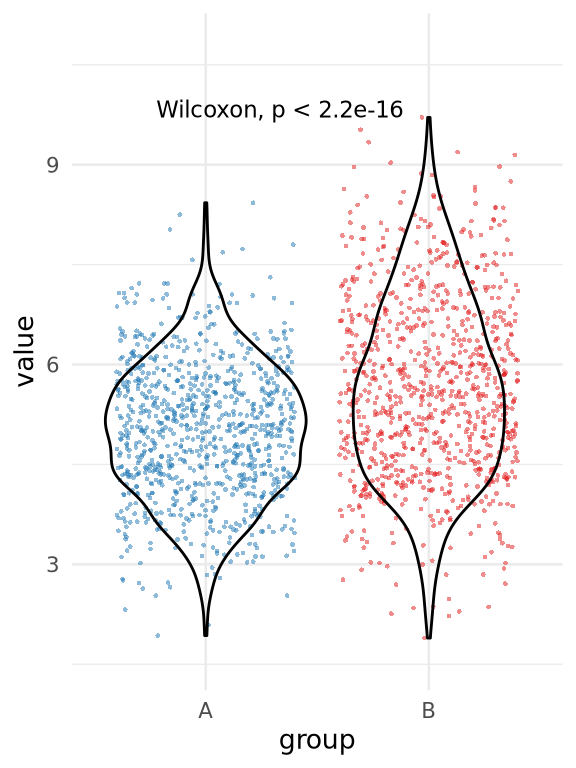
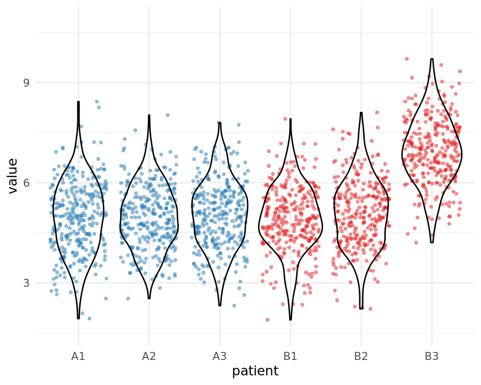
Many tests assume independence!
Complex designs: Approaches
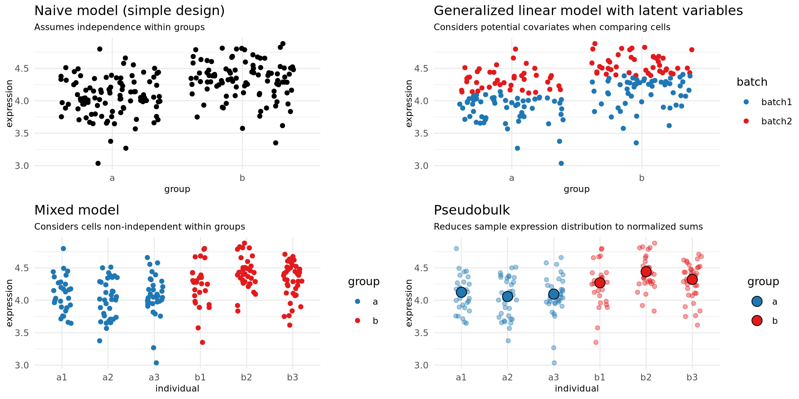Complex designs: Approaches
| Approach | Advantages | Disadvantages |
|---|---|---|
| Naive model | - Fast | - Sensitive to false positives - Assumptions are often violated |
| GLM | - Can account for covariates | - Slower - Not recommended to account for separate individuals |
| Mixed models | - Can account for separate individuals - Lower risk for false positives |
- Slow |
| Pseudobulk | - Accounts for separate individuals/samples - Low risk for false positives - Fast |
- Often has lower power - Cannot include information about intrasample distribution |
Complex designs: Approaches
| Approach | Speed | Can include covariates | Can account for multilevel design | Sensitivity | Specificity |
|---|---|---|---|---|---|
| Naive model | Fast | - | - | High | Low |
| GLM | Slow | ✓ | Not recommended | High | Low |
| Mixed models | Slow | ✓ | ✓ | Medium | Medium |
| Pseudobulk | Fast | ✓ | ✓ | Low | High |
NB: This table broadly summarizes each approach, but each approach includes many methods with their own advantages and disadvantages.
1-vs-1 and 1-vs-all
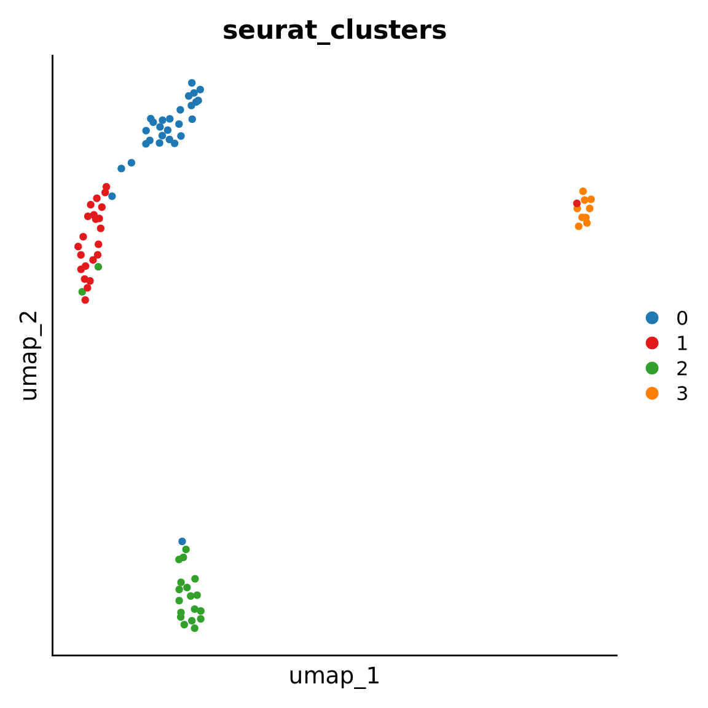
- 1-vs-1: C1 vs C2
- 1-vs-all: C1 vs C0 + C2 + C3
1-vs-all analysis

- Larger clusters will be over-represented unless subsampled
- Highly similar clusters
- Will have most of their DEGs overlapping
- Pairwise comparisons might help rather than 1 vs rest
Considerations - what does the p-value mean?
- Null hypothesis: Mean/median/distribution is equal between group A and group B
- \(p\) < 0.05 : if null hypothesis is true, we can expect the measured result in < 5% of cases where group A and group B have been sampled at \(n\)
- \(p\) depends on \(n\), variance and intergroup difference
- As \(n\) increases, variance can increase and difference can decrease without losing power
- Likelihood of differences reflecting a true difference in distribution vs random chance
Statistics - what does the p-value mean?
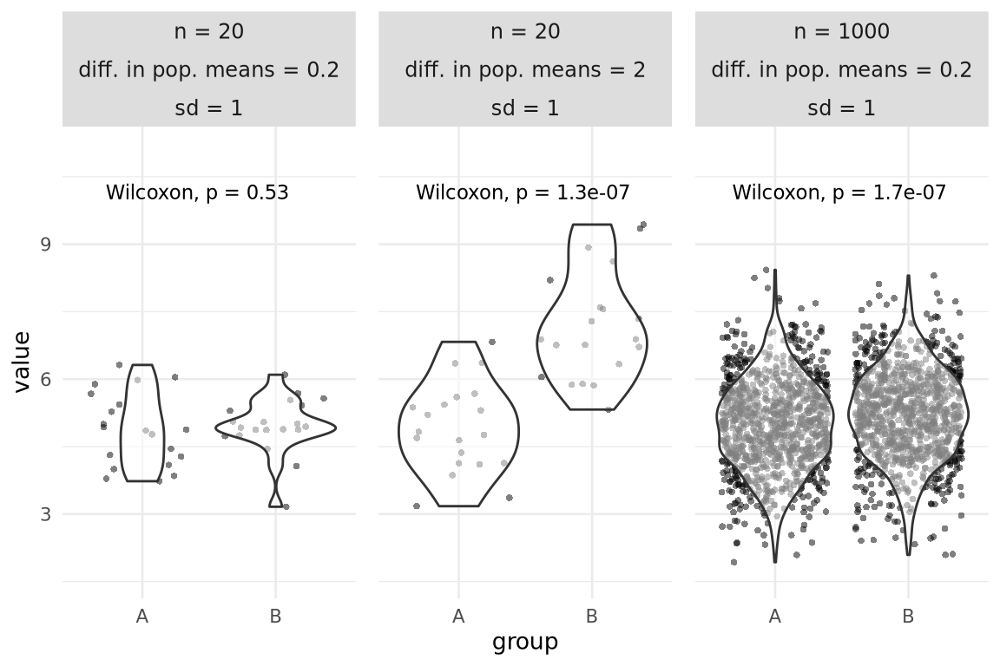Are all statistically significant differences of interest?
Considerations: Composition vs expression
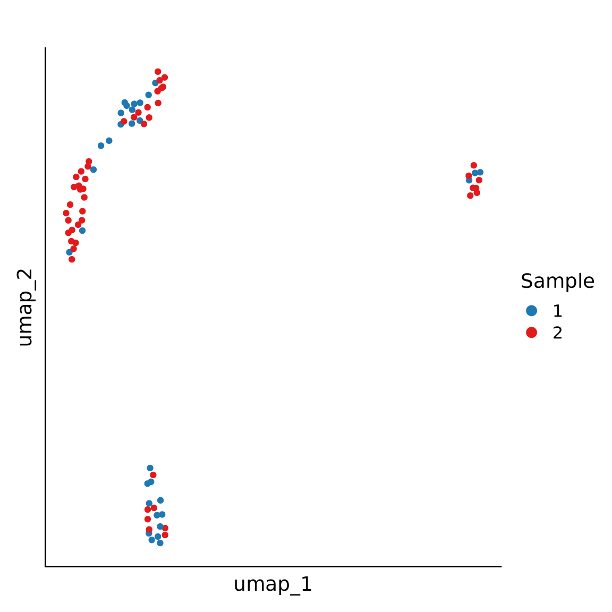Comparing Methods

- T-test and Wilcoxon work well enough given sufficient number of samples
- Bulk methods are not worse than single-cell specific methods
- Pre-filtering lowly expressed genes is important for bulk methods
Soneson & Robinson (2018)
Comparing Methods

Similarity between methods based on genes identified
Soneson & Robinson (2018)
Assessing results
- We don’t know the ground truth
- Using known data (positive controls)
- Simulated data by modelling
- Intersect of multiple methods
- Visual inspection
Assessing results

Violin plots are good to visualize distribution
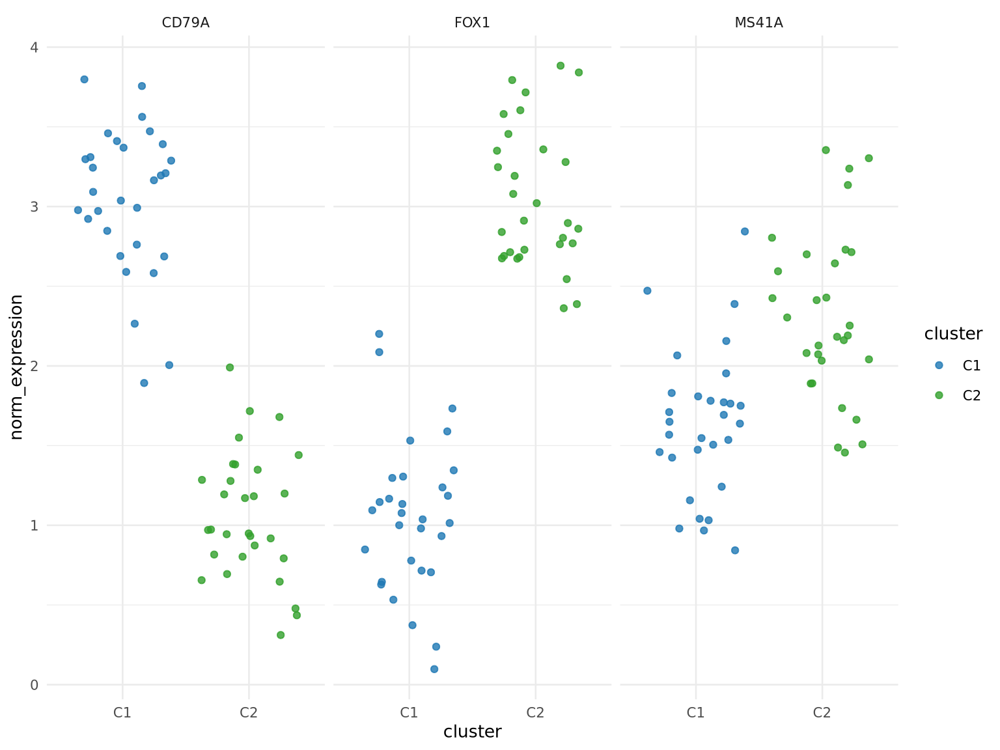
Dot plots give a quick overview of both expression and % of cells expressing a gene
Things to think about
- Which data should I use? Raw? Normalized? Log Normalized?
- Depends on test/method
- Check that DEGs are not just a result of some batch effect
- Batch effects can be corrected using covariates
- Consider independence between cells
- Use a method that accounts for non-independence or proceed with caution
- How many cells/samples do I need for reliable DGE?
- Also depends on quality of library prep
- Distinctness of cell types
- Differentiate between noise and signal
- Any comparison will produce some DEGs
- Keep in mind what you are comparing
- DE results are always relative to other cells
Conclusion
- Important to understand what you are trying to compare: mean expression vs probability of being expressed
- Important to understand the data
- Take into account single-cell specific nuances
- Models can get complicated
- Important to assess and validate the results
- Most tests give similar results for top genes but p values might differ.
- Fold changes can’t be interpreted the same way as bulk rnaseq
- Too many cells can give extremely low p values
References
Finak, G., McDavid, A., Yajima, M., Deng, J., Gersuk, V., Shalek, A. K., Slichter, C. K., Miller, H. W., McElrath, M. J., Prlic, M., et al. (2015). MAST: A flexible statistical framework for assessing transcriptional changes and characterizing heterogeneity in single-cell RNA sequencing data. Genome Biology, 16(1), 1–13. https://genomebiology.biomedcentral.com/articles/10.1186/s13059-015-0844-5
Soneson, C., & Robinson, M. D. (2018). Bias, robustness and scalability in single-cell differential expression analysis. Nature Methods, 15(4), 255–261. https://www.nature.com/articles/nmeth.4612
Tiberi, S., Crowell, H. L., Samartsidis, P., Weber, L. M., & Robinson, M. (2023). Distinct: A novel approach to differential distribution analyses. The Annals of Applied Statistics, 17(2), 1681–1700. https://doi.org/10.1214/22-AOAS1689
Wu, Z., Zhang, Y., Stitzel, M. L., & Wu, H. (2018). Two-phase differential expression analysis for single cell RNA-seq. Bioinformatics, 34(19), 3340–3348. https://academic.oup.com/bioinformatics/article/34/19/3340/4984507
Acknowledgements
Slides adapted from previous presentations by Olga Dethlefson, Åsa Björklund, Vincent van Hoef and Roy Francis.